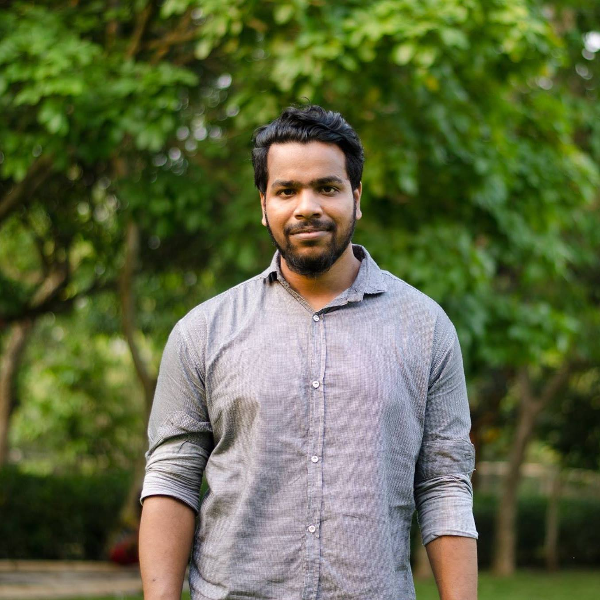

Building AI agents that work alongside people in the real world.
I'm a 4th-year PhD student in Computer Science at NC State's ARG Lab, advised by Dr. Collin F. Lynch. My research focuses on agentic AI systems that observe ongoing human behavior and decide when and how to act, grounding these decisions in large-scale behavioral data from real users. I built EclipseMonitor, a production data collection system capturing millions of coding events per semester, and I design and evaluate LLM-based agents that operate inside live programming environments. Last summer I was a Research Intern at AT&T Labs, building deep learning pipelines for real-time network monitoring across 10,000+ telecom sites.

Saminur Islam
PhD Candidate, NC State University
ARG Lab · Dept. of Computer Science
Raleigh, NC, USA
Agentic AI, LLMs, Behavioral Data Mining, Time-Series ML
Expected graduation: Aug 2027
Open to research internships, Fall 2026 & Summer 2027
What I work on
Research Interests
My work spans three connected areas, from building agents that act inside real environments to modeling behavior at scale.
Agentic AI Systems
Building agents that observe ongoing human behavior and decide when, whether, and how to act. I frame agent intervention as a sequential decision problem grounded in real longitudinal data from live coding environments.
LLMs & Behavioral Modeling
Fine-tuning and evaluating LLMs for tasks grounded in real user behavior. My PALMU work identifies and corrects a training-time failure mode in self-training models, with applications to AI agents that improve over time.
Large-Scale Data & Time-Series ML
Designing deep learning pipelines for large-scale behavioral and time-series data. At AT&T Labs, I built multivariate anomaly detection over 10,000+ telecom sites with 95% recall and real-time alerting.
Career
Experience
A mix of academic research and industry internships across AI, ML, and software systems.
— Present
Graduate Research Assistant
Designing agentic AI systems that operate in live coding environments, collecting and analyzing millions of behavioral events per semester, and building LLM-based feedback agents. Advised by Dr. Collin F. Lynch.
— Aug 2025
Research Intern
Built deep learning pipelines for multivariate time-series monitoring across 10,000+ E911 telecom sites. Replaced a 3-day manual inspection process with real-time anomaly detection achieving 95% recall and 63% fewer false alarms.
— May 2022
Graduate Research Assistant
Designed deep learning models for drug-drug interaction discovery using protein sequence-structure similarity networks, achieving up to 98% precision and 99% AUC. Published in Scientific Reports (2025).
— Aug 2021
Graduate Intern
Built a secure file transfer application and worked with cross-functional teams to streamline data workflows.
— Dec 2019
Software Developer
Built real-time data ingestion and ML pipelines for financial time-series data. Maintained AWS infrastructure with Redis-backed low-latency model inference at scale.
What I've built
Selected Projects
Research systems and applied ML projects spanning coding environments, telecom, and drug discovery.
EclipseMonitor
SIGCSE 2025A production telemetry backend capturing 5–7 million IDE interaction events per semester at millisecond resolution. Records coding, debugging, and help-seeking activity across 30–40 concurrent users per semester over 3+ years.
Agentic Tutoring Framework
Under Review · NeurIPS 2026A process-aware agent that models student behavior over long coding sessions and decides in real time when and how an LLM should intervene. Frames adaptive feedback as a sequential decision problem over longitudinal behavioral data.
E911 Anomaly Detection
AT&T Labs · 2025Deep learning pipeline for real-time multivariate time-series monitoring across 10,000+ telecom sites. Replaced a 3-day manual process with automated detection achieving 95% recall, 63% fewer false alarms, and under 1 hour MTTR.
Research output
Publications
Peer-reviewed work across AI, ML, and computing education. View full list on Google Scholar →
PALMU: Correcting the Hidden Cost of Forgetting in Self-Training Models
PS3N: Leveraging Protein Sequence-Structure Similarity for Novel Drug-Drug Interaction Discovery
📄 DOI LinkCharacterizing Student Coding Behaviors from IDE Traces: Unsupervised Clustering of Code Evolution Metrics
Debugging Around Help: An Episode-Level Analysis of Debugging and Help-Seeking Behaviors in Introductory Programming
How Do Undergraduates Interested in Computer Science Use Online, On-Demand CS Coursework?
📄 ACM LinkWhat Does It Take to Support Problem Solving in Programming Classrooms? A New Framework from the K-12 Teacher Perspective
📄 ACM LinkEclipseMonitor: A Real-Time Student Programming Environment Data Collection Tool
📄 ACM LinkA Survey on Consensus Algorithms in Blockchain-based Applications: Architecture, Taxonomy, and Operational Issues
📄 IEEE LinkGet in touch
Contact
I'm open to research collaborations, internship opportunities, and paper reviews. Feel free to reach out.